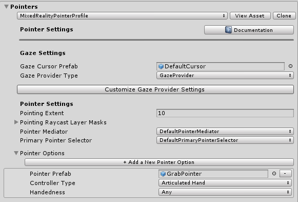
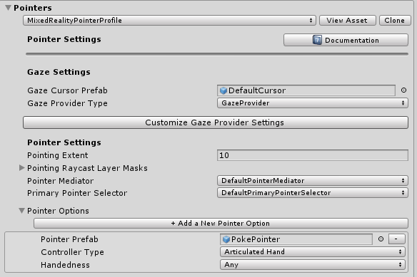
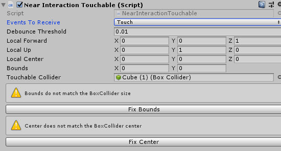
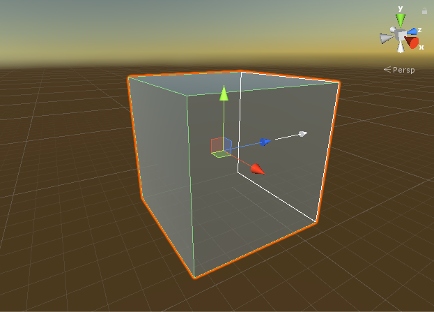

如何在MRTK中添加 near interaction
Near interactions以触摸和抓握的形式出现。 PokePointer 和 SpherePointer分别将触摸(touch)和抓握(grab)事件作为pointer事件引发。
需要三个关键步骤来侦听特定GameObject上的触摸 和/或 抓握输入事件。
- 确保相关的 pointer 已注册在主 MRTK Configuration Profile.
- 确保所需的 GameObject 具有适当的grab 或 touch 脚本组件和
Unity Collider. - 在附加在所需 GameObject 的脚本上实现 input handler 接口，以侦听grab 或 touch 事件.
添加抓握(grab)交互
确保 SpherePointer 已在 MRTK Pointer profile 中注册.
默认的MRTKprofile和默认的HoloLens 2 profile已经包含 SpherePointer. 通过选择MRTK Configuration profile并导航至 Input > Pointers > Pointer Options 可以确认将创建一个 SpherePointer. 默认GrabPointer 预制体, 在 MRTK.SDK/Features/UX/Prefabs/Pointers/ 下, 应以 Articulated Hand 的 Controller Type 列出 . A custom prefab can be utilized as long as it implements the 只要实现
SpherePointer类，就可以使用自定义的预制体.
在允许抓握的GameObject上, 添加一个
NearInteractionGrabbable, 以及一个 collider.确保GameObject的层在可抓握的层之上。默认情况下，除Spatial Awareness和Ignore Raycasts外的所有层都是可抓握的。通过检查GrabPointer预制体中的Grab Layer Masks，查看可抓握的层。
在GameObject或其祖先之一上，添加实现
IMixedRealityPointerHandler接口的脚本组件. 具有NearInteractionGrabbable的对象的任何祖先也将能够接收指针事件.
抓握代码示例
下面是一个脚本，如果事件是触摸或抓握，将进行print. 在相关的IMixedRealityPointerHandler 接口函数中,可以通过 MixedRealityPointerEventData查看触发该事件的指针的类型. 如果指针是 SpherePointer, 则交互是抓握.
public class PrintPointerEvents : MonoBehaviour, IMixedRealityPointerHandler
{
public void OnPointerDown(MixedRealityPointerEventData eventData)
{
if (eventData.Pointer is SpherePointer)
{
Debug.Log($"Grab start from {eventData.Pointer.PointerName}");
}
if (eventData.Pointer is PokePointer)
{
Debug.Log($"Touch start from {eventData.Pointer.PointerName}");
}
}
public void OnPointerClicked(MixedRealityPointerEventData eventData) {}
public void OnPointerDragged(MixedRealityPointerEventData eventData) {}
public void OnPointerUp(MixedRealityPointerEventData eventData) {}
}
添加触摸(touch)交互
在UnityUI元素上添加触摸交互的过程与普通3D GameObjects的过程不同。您可以跳到本节下面的 Unity UI 部分，以启用Unity UI组件。
但是，对于两种类型的UX元素，请确保在MRTK Pointer profile 中都注册了 PokePointer。
默认的 MRTK profile 和默认的 HoloLens 2 profile already 已经包含 PokePointer. 您可以通过选择MRTK Configuration Profile
并导航到 Input > Pointers > Pointer Options 来确认将创建一个PokePointer. 默认 PokePointer 预制体, 预制体在 MRTK.SDK/Features/UX/Prefabs/Pointers/ 文件夹下, 应以Articulated Hand的Controller Type列出。只要实现PokePointer类
，就可以使用自定义的预制体。

3D GameObjects
在允许被触摸的 GameObject上，添加collider和
NearInteractionTouchable组件.1.如果在下面的组件脚本中使用
IMixedRealityTouchHandler接口，则将 Events to Receive设置为 Touch.- 点击 Fix bounds 和 Fix center

在该对象或其祖先之一上，添加实现
IMixedRealityTouchHandler接口的脚本组件.具有NearInteractionTouchable的对象的任何祖先也将能够接收指针事件.
Note
在选择了具有NearInteractionTouchable GameObject的编辑器场景视图中，请注意白色轮廓正方形和箭头。箭头指向可触摸的“前端”。可碰撞对象只能从该方向触摸。要使collider可以从各个方向进行触摸，请改为添加NearInteractionTouchableVolume。

Unity UI
添加/确保 场景中存在一个 UnityUI canvas.
在可被触摸的GameObject上，添加
NearInteractionTouchableUnityUI组件.- 如果在下面的组件脚本中使用
IMixedRealityTouchHandler接口，则将Events to Receive设置为Touch.
- 如果在下面的组件脚本中使用
在该对象或其祖先之一上，添加实现
IMixedRealityTouchHandler接口的脚本组件. 具有NearInteractionTouchableUnityUI对象的任何祖先也将能够接收指针事件.
Important
在NearInteractionTouchable脚本组件上，对于属性 Events to Receive，有两个选项：Pointer和Touch。如果在你的组件脚本中使用IMixedRealityPointerHandler 接口，则将 Events to Receive 设置为 Pointer；如果使用IMixedRealityTouchHandler ，则将Events to Receive设置为Touch，用于响应/处理输入事件。
触摸代码示例
下面的代码演示了一个MonoBehaviour可以通过NearInteractionTouchable变体组件将其附加到GameObject上并响应触摸输入事件。
public class TouchEventsExample : MonoBehaviour, IMixedRealityTouchHandler
{
public void OnTouchStarted(HandTrackingInputEventData eventData)
{
string ptrName = eventData.Pointer.PointerName;
Debug.Log($"Touch started from {ptrName}");
}
public void OnTouchCompleted(HandTrackingInputEventData eventData) {}
public void OnTouchUpdated(HandTrackingInputEventData eventData) { }
}
Near interaction 脚本示例
触摸事件
本示例创建一个立方体，使其可触摸，并在触摸时更改颜色。
public static void MakeChangeColorOnTouch(GameObject target)
{
// 添加并配置可触摸
var touchable = target.AddComponent<NearInteractionTouchableVolume>();
touchable.EventsToReceive = TouchableEventType.Pointer;
var material = target.GetComponent<Renderer>().material;
// 指针down and up时更改颜色
var pointerHandler = target.AddComponent<PointerHandler>();
pointerHandler.OnPointerDown.AddListener((e) => material.color = Color.green);
pointerHandler.OnPointerUp.AddListener((e) => material.color = Color.magenta);
}
抓握事件
下面的示例演示如何使GameObject可拖拽。假设游戏对象上有一个collider。
public static void MakeNearDraggable(GameObject target)
{
// 实例化并添加可抓握
target.AddComponent<NearInteractionGrabbable>();
// Add ability to drag by re-parenting to pointer object on pointer down
var pointerHandler = target.AddComponent<PointerHandler>();
pointerHandler.OnPointerDown.AddListener((e) =>
{
if (e.Pointer is SpherePointer)
{
target.transform.parent = ((SpherePointer)(e.Pointer)).transform;
}
});
pointerHandler.OnPointerUp.AddListener((e) =>
{
if (e.Pointer is SpherePointer)
{
target.transform.parent = null;
}
});
}
有用的 APIs
NearInteractionGrabbableNearInteractionTouchableNearInteractionTouchableUnityUINearInteractionTouchableVolumeIMixedRealityTouchHandlerIMixedRealityPointerHandler